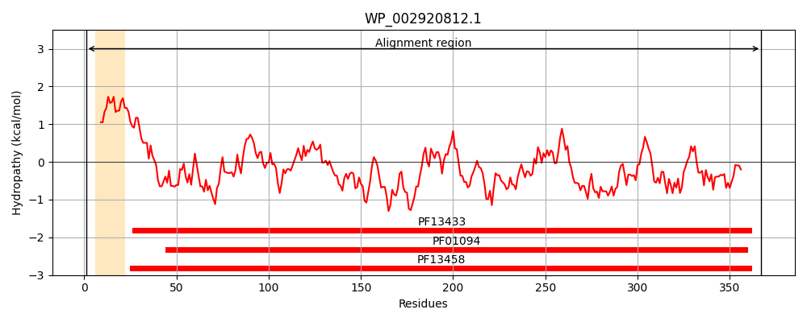
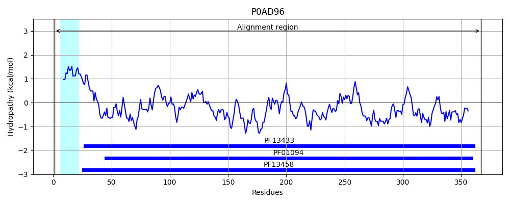
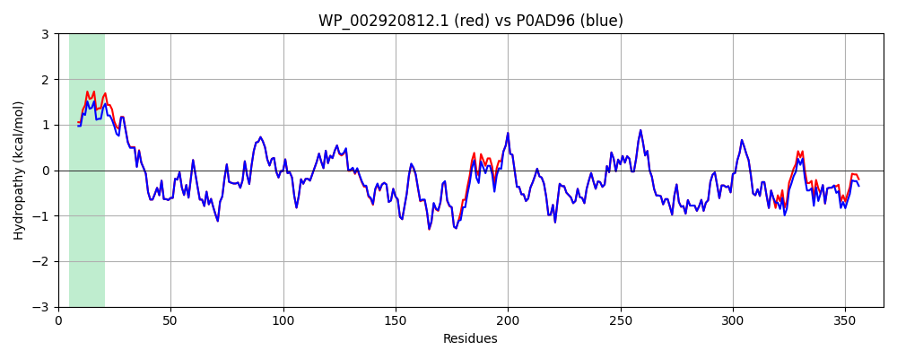

Hit Accession: P0AD96
Hit TCID: 3.A.1.4.1
Hit Description: gnl|BL_ORD_ID|8743 gnl|TC-DB|P0AD96|3.A.1.4.1 Leu/Ile/Val-binding protein - Escherichia coli.
Mach Len: 367
e:0.000000
Query TMS Count : 1
Hit TMS Count: 1
TMS-Overlap Score: 0.850000
Predicted Substrates:CHEBI:17191;L-isoleucine, CHEBI:25017;leucine, CHEBI:27266;valine, CHEBI:8089;phenylalanine, CHEBI:9800;tyrosine
BLAST Alignment:
Score: 1814 , Bit scores: 703 bits, E-value: 0.0e+00, Alignment length: 367, Percentage identity: 96
Query: 1 MNMKGKALLAGCIALVMSSAALAEDIKIAVVGAMSGPVAQYGDQEFTGAEQAVADINAKGGIKGNKLQIVKYDDACDPKQAVAVANKVVNDGIKYVIGHLCSSSTQPASDIYEDEGILMITPAATAPELTARGYKLILRTTGLDSDQGPTAAKYILDKVKPQRIAVVHDKQQYGEGLARAVQDGLKKGGANVVFFDGITAGEKDFSTLVARLKKENIDFVYYGGYHPEMGQILRQARAAGLKTQFMGPEGVANVSLSNIAGESAEGLLVTKPKNYDQVPANKPIVDAIKAKKQDPSGAFVWTTYAALQSLQAGLNQSDDPAEIAKYLKGATVDTVMGPLSWDQKGDLKGFEFGVFTWHANGTATDAK 367
MN+KGKALLAGCIAL S+ ALAEDIK+AVVGAMSGPVAQYGDQEFTGAEQAVADINAKGGIKGNKLQIVKYDDACDPKQAVAVANKVVNDGIKYVIGHLCSSSTQPASDIYEDEGILMITPAATAPELTARGY+LILRTTGLDSDQGPTAAKYIL+KVKPQRIA+VHDKQQYGEGLARAVQDGLKKG ANVVFFDGITAGEKDFSTLVARLKKENIDFVYYGGYHPEMGQILRQARAAGLKTQFMGPEGVANVSLSNIAGESAEGLLVTKPKNYDQVPANKPIVDAIKAKKQDPSGAFVWTTYAALQSLQAGLNQSDDPAEIAKYLK +VDTVMGPL+WD+KGDLKGFEFGVF WHANGTATDAK
Sbjct: 1 MNIKGKALLAGCIALAFSNMALAEDIKVAVVGAMSGPVAQYGDQEFTGAEQAVADINAKGGIKGNKLQIVKYDDACDPKQAVAVANKVVNDGIKYVIGHLCSSSTQPASDIYEDEGILMITPAATAPELTARGYQLILRTTGLDSDQGPTAAKYILEKVKPQRIAIVHDKQQYGEGLARAVQDGLKKGNANVVFFDGITAGEKDFSTLVARLKKENIDFVYYGGYHPEMGQILRQARAAGLKTQFMGPEGVANVSLSNIAGESAEGLLVTKPKNYDQVPANKPIVDAIKAKKQDPSGAFVWTTYAALQSLQAGLNQSDDPAEIAKYLKANSVDTVMGPLTWDEKGDLKGFEFGVFDWHANGTATDAK 367 | Protein Hydropathy Plots: |
|---|
|  |  |
Pairwise Alignment-Hydropathy Plot:
|
|---|
|  |